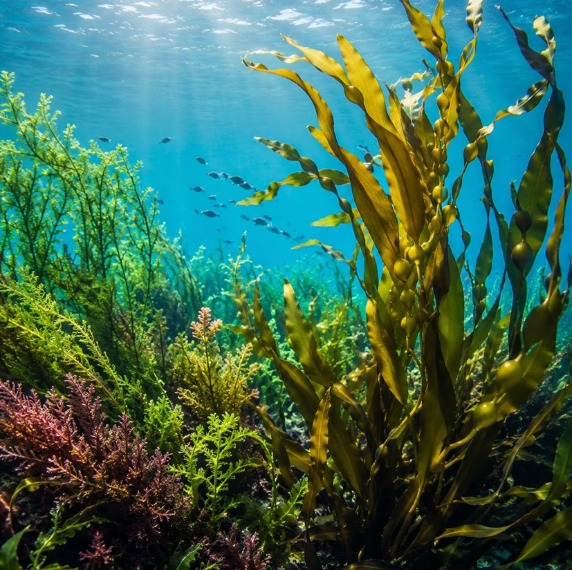
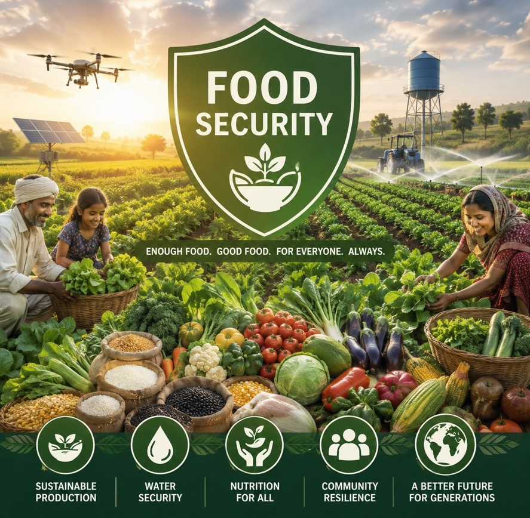
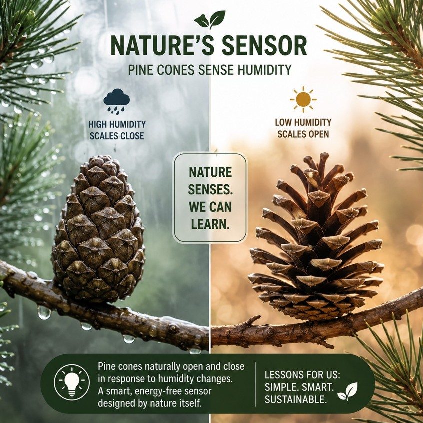
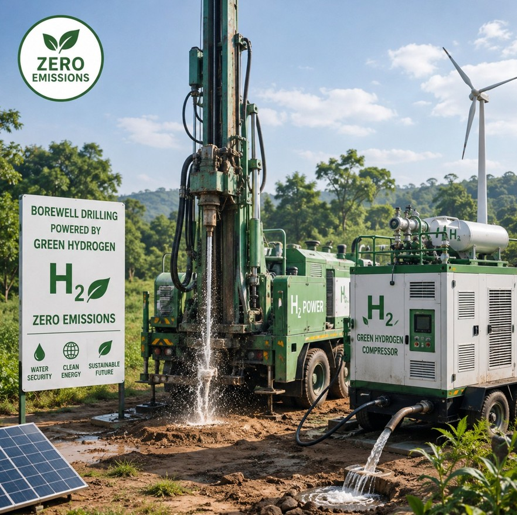

Index
In this edition, we slow down to dig deep dive into under the ocean to observe the quiet, BLUE ENGINE. Reminding us an opportuninty to tap into and take a foot forward to serve the planet. What it's, How, lets explore herein..
-
01

THE BLUE ENGINE
Earth’s largest renewable farms existing beyond our shores
-
02

FOOD SECURITY
ARE WE SURE TO GET FOOD TOMORROW?
-
03

WORLD’S MOST ADVANCED SENSORS
How Nature Senses, Responds and Adapts Without Electronics
-
04

BOREWELL RIGS and SUSTAINABILITY
The Ultimate Crux: A clear, sustainable pathway
-
05
Synchrony Wing
A Photographic Archive of Temporary Botanical Forms
-
06
Resilience of Life
Continuity & The Blueprint of Adaptation